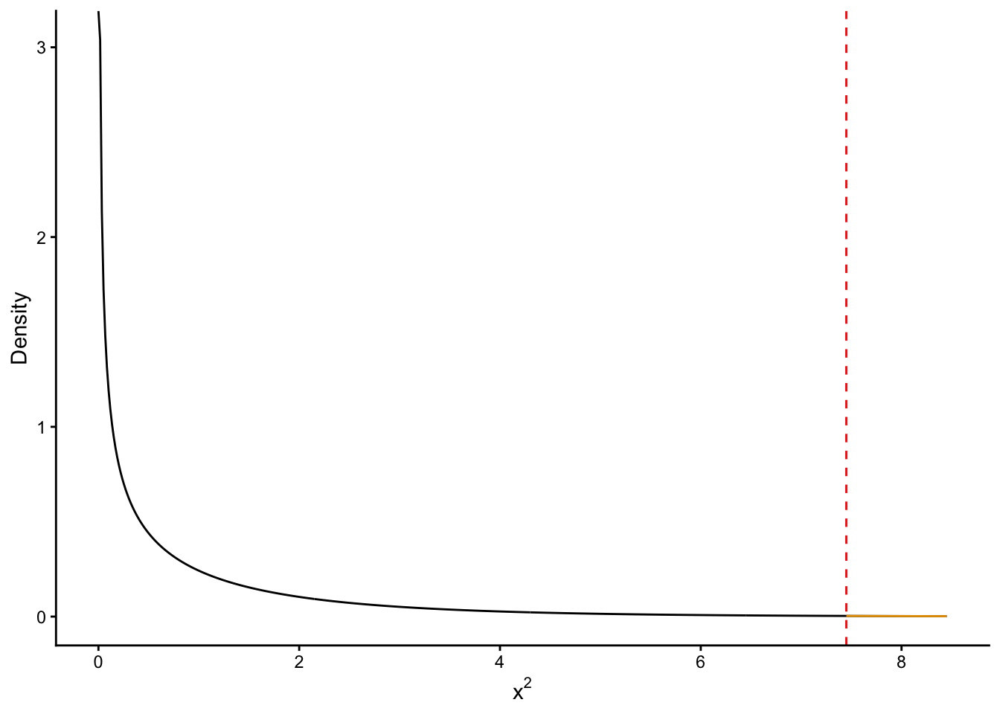
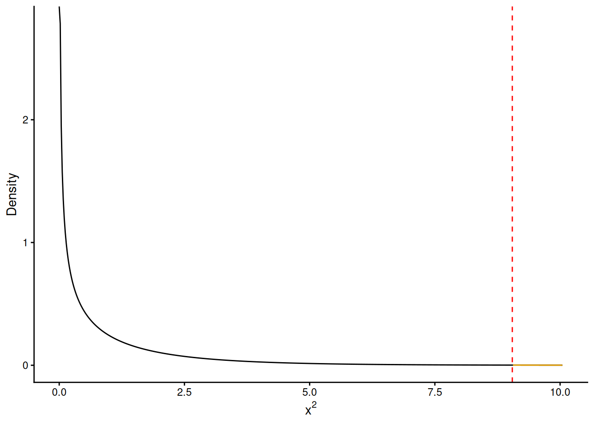
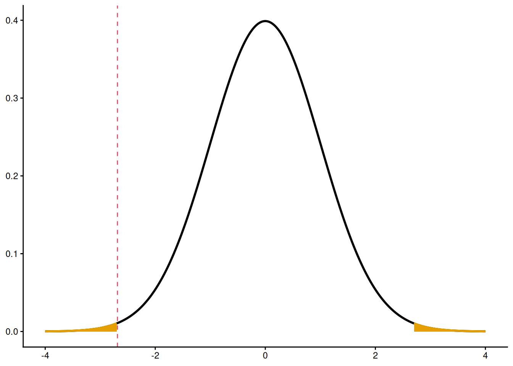
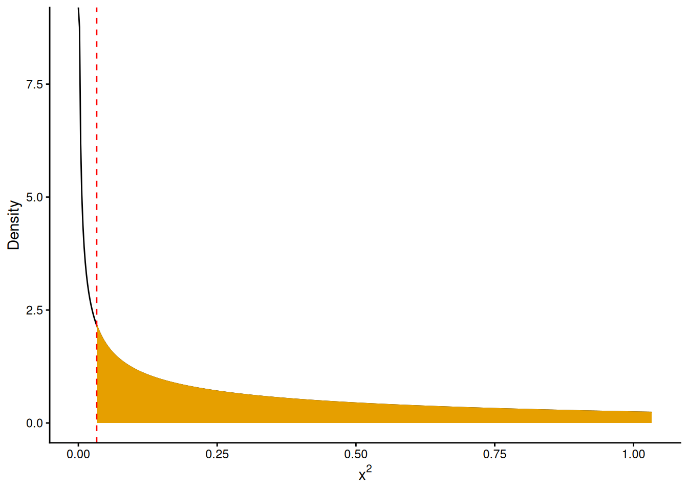

(0.04535 - 0.134) / sqrt((1/199 + 1/97) * 0.07432 * (1 - 0.07432))[1] -2.729David Gerard
December 2, 2025
These practice problems mostly come from Rosner’s publicly available study sheet at the books companion website. The solutions are my own, since we differ slightly on what we are looking for in the solutions.
In a 1985 study of the effectiveness of streptokinase in the treatment of patients who have been hospitalized after myocardial infarction, 9 of 199 males receiving streptokinase and 13 of 97 males in the control group died within 12 months.
Use the normal-theory method to test for significant differences in 12-month mortality between the two groups.
Let \(X_1\) be the number of deaths out of the \(n_1 = 199\) males receiving strptokinase. Let \(X_2\) be the number of deaths out of the \(n_2 = 97\) control males. Then \(X_1 \sim \mathrm{Binom}(199, p_1)\) and \(X_2 \sim \mathrm{Binom}(97, p_2)\). We are testing \(H_0: p_1 = p_2\) versus \(H_A: p_1 \neq p_2\). We calculate statistics
Using the normal theory, we calculate the test statistic \[ Z = \frac{\hat{p}_1 - \hat{p}_2}{\sqrt{\left(\frac{1}{n_1} + \frac{1}{n_2}\right)\hat{p}(1-\hat{p})}} = \frac{0.04535 - 0.134}{\left(\frac{1}{199} + \frac{1}{97}\right)\times0.07432\times(1-0.07432)} \] Numerically,
We compare this to the null distribution of \(N(0,1)\)
So there is a significant difference of death rates between the two groups.
You can use prop.test() to do this. It will give you slightly different (better) results because it will do a continutity correction.
Construct the observed and expected contingency tables for these data.
Observed
| streptokinase |
died
|
Total | |
|---|---|---|---|
| Yes | No | ||
| Yes | 9 | 190 | 199 |
| No | 13 | 84 | 97 |
| Total | 22 | 274 | 296 |
Expected:
| streptokinase |
died
|
Total | |
|---|---|---|---|
| Yes | No | ||
| Yes | 14.791 | 184.21 | 199 |
| No | 7.209 | 89.79 | 97 |
| Total | 22.000 | 274.00 | 296 |
Perform the test in Problem 10.1 using the contingency-table method.
We calculate \(\sum_{\text{categories}} \frac{(o-e)^2}{e}\)$ + + + $$ Numerically
[1] 7.475Under the null, this follows a chi-squared distribution with 1 degree of freedom (\(\chi^2_1\)). We get the \(p\)-value by the area under the curve above 7.475

So we have strong evidence of an association between streptokinase use and death.
The real-way in R is to use chisq.test()
# A tibble: 1 × 4
statistic p.value parameter method
<dbl> <dbl> <int> <chr>
1 6.24 0.0125 1 Pearson's Chi-squared test with Yates' continuity…The \(p\)-value again differs because before we did not do a continuity correction.
In the streptokinase study in Problem 10.1, 2 of 15 females receiving streptokinase and 4 of 19 females in the control group died within 12 months.
Why is Fisher’s exact test the appropriate procedure to test for differences in 12-month mortality rates between these two groups?
The sample size is too low for asymptotic approximation to work well. Our rule of thumb is that we need an expected count of at least five in each cell. Our observed table is
| streptokinase |
died
|
Total | |
|---|---|---|---|
| Yes | No | ||
| Yes | 2 | 13 | 15 |
| No | 4 | 15 | 19 |
| Total | 6 | 28 | 34 |
These are small, but we base our decision to do an exact test based on the expected counts, which are:
| streptokinase |
died
|
Total | |
|---|---|---|---|
| Yes | No | ||
| Yes | 2.647 | 12.35 | 15 |
| No | 3.353 | 15.65 | 19 |
| Total | 6.000 | 28.00 | 34 |
There are two cells here with expected counts under 5, so we cannot use an asymptotic approach.
Write down all possible tables with the same row and column margins as given in the observed data.
\[ \begin{pmatrix} 0 & 15\\ 6 & 13 \end{pmatrix}, \begin{pmatrix} 1 & 14\\ 5 & 14 \end{pmatrix}, \begin{pmatrix} 2 & 13\\ 4 & 15 \end{pmatrix}, \begin{pmatrix} 3 & 12\\ 3 & 16 \end{pmatrix}, \begin{pmatrix} 4 & 11\\ 2 & 17 \end{pmatrix}, \begin{pmatrix} 5 & 10\\ 1 & 18 \end{pmatrix}, \begin{pmatrix} 6 & 9\\ 0 & 19 \end{pmatrix} \]
The conditional null probabilities for tables in question 10.6 are:
[1] 0.020174 0.129690 0.302609 0.327826 0.173555 0.042425 0.003721Our observed table is the third one (with probability 0.302609)
Evaluate whether or not there is a significant difference between the mortality rates for streptokinase and control-group females using a two-sided test.
The \(p\)-value is
So we do not have a significance difference between the mortaility rates for the two groups.
We can verify our calculation in R
A 1979 study investigated the relationship between cigarette smoking and subsequent mortality in men with a prior history of coronary disease. It was found that 264 out of 1731 non-smokers and 208 out of 1058 smokers had died in the 5-year period after the study began.
Assuming that the age distributions of the two groups are comparable, compare the mortality rates in the two groups.
We have this observed table of counts:
| smoker |
died
|
Total | |
|---|---|---|---|
| Yes | No | ||
| No | 264 | 1467 | 1731 |
| Yes | 208 | 850 | 1058 |
| Total | 472 | 2317 | 2789 |
Expected counts:
| smoker |
died
|
Total | |
|---|---|---|---|
| Yes | No | ||
| No | 292.9 | 1438.1 | 1731 |
| Yes | 179.1 | 878.9 | 1058 |
| Total | 472.0 | 2317.0 | 2789 |
We calculate the test-statistic \[ \frac{(264 - 292.9)^2}{292.9} + \frac{(1467 - 1438.1)^2}{1438.1} + \frac{(208 - 179.1)^2}{179.1} + \frac{(850 - 878.9)^2}{878.9} \] Numerically
[1] 9.046We compare this to a chi-squared distribution with one degree of freedom

So we have strong evidence that there is an association between smoking status and death.
The real-way in R is
# A tibble: 1 × 4
statistic p.value parameter method
<dbl> <dbl> <int> <chr>
1 8.77 0.00307 1 Pearson's Chi-squared test with Yates' continuity…The p-values differ because of the continuity correction.
Suppose there are 500 pairs of pregnant women who participate in a prematurity study and are paired in such a way that the body weights of the 2 women in a pair are within 5 lb of each other. One of the 2 women is given a placebo and the other drug A to see if drug A has an effect in preventing prematurity. Suppose that in 30 pairs of women, both women in a pair have a premature child; in 420 pairs of women, both women have a normal child; in 35 pairs of women, the woman taking drug A has a normal child and the woman taking the placebo has a premature child; in 15 pairs of women, the woman taking drug A has a premature child and the woman taking the placebo has a normal child.
Assess the statistical significance of these results.
We wish to test the null hypothesis that the probability of a premature child is the same in both the drug and the control groups, against the alternative that they differ. This is a matched pairs design, so we should be thinking about McNemar’s test. Let’s build a paired contingency table.
| control |
drug
|
Total | |
|---|---|---|---|
| Normal | Premature | ||
| Normal | 420 | 15 | 435 |
| Premature | 35 | 30 | 65 |
| Total | 455 | 45 | 500 |
Let \(X\) be the number of pairs where the drug woman has a premature baby and the control woman has a normal baby. Then \(X \sim \mathrm{Binom}(50, p)\). We are testing the null \(H_0: p = 1/2\) versus \(H_A: p \neq 1/2\). Since \(n \geq 20\), we can use the normal-based approach. We could also use an exact approach. Let’s calculate the test statistic \[ Z = \frac{\hat{p} - p_0}{\sqrt{p_0(1-p_0)/n}} = \frac{15/50 - 1/2}{\sqrt{1/2(1 - 1/2)/50}} \] Numerically (also doing a continuity correction)
We compare this to a standard normal distribution

This fits the “real-way” using prop.test()
# A tibble: 1 × 3
p.value conf.low conf.high
<dbl> <dbl> <dbl>
1 0.00721 0.183 0.448Either way, we have strong evidence that the premature rate differs between drug and control groups. Indeed, our confidence interval indicates that the drug reduces the premature rate.
An issue of current interest is the effect of delayed childbearing on pregnancy outcome. In a recent paper a population of first deliveries was assessed for low-birthweight deliveries (<2500 g) according to the woman’s age and prior pregnancy history. The data in Table 10.3 were presented.
| Table 10.3 | |||
| Relationship of age and pregnancy history to low-birthweight deliveries | |||
| Age | History1 | n | Percentage Low Birthweight |
|---|---|---|---|
| ≥30 | No | 225 | 3.56 |
| ≥30 | Yes | 88 | 6.82 |
| <30 | No | 906 | 3.31 |
| <30 | Yes | 503 | 1.31 |
| 1 History = Yes if a woman had a prior history of spontaneous abortion or infertility, = no otherwise | |||
What test can be used to assess the effect of age on low-birthweight deliveries among women with a negative history?
Let’s convert this into a 2x2 table. There are 225 women age ≥30 with a negative histroy. Among those, 225 * 0.0356 = 8 have a low birthweight. There are 906 women <30 with a negative history, among those 906 * 0.0331 = 30 have a low birthweight.
| Age |
Low Birthweight
|
Total | |
|---|---|---|---|
| Yes | No | ||
| ≥30 | 8 | 217 | 225 |
| <30 | 30 | 876 | 906 |
| Total | 38 | 1093 | 1131 |
We can do a chi-squared test to test the null that age is independent of low birthweight status, against the alternative that they are dependent.
Perform the test in Problem 10.35 and report a p-value.
You should be able to do this by hand now. Calculate the expected counts
| Age |
Low Birthweight
|
Total | |
|---|---|---|---|
| Yes | No | ||
| ≥30 | 5.57 | 217.4 | 223 |
| <30 | 30.44 | 875.6 | 906 |
| Total | 36.01 | 1093.0 | 1129 |
Then calculate the chi-squared statistic, which ends up being about 0.033. The \(p\)-value then is calculated from a \(\chi^2_1\) distribution

So we have no evidence of an association between age of first birth and low birthweight status among women without a history.